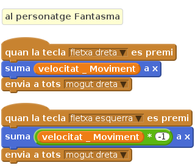
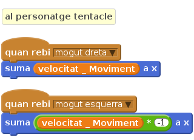
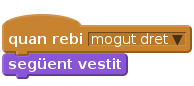

Llista de tasques
Com que el monstre estarà compost per moltes parts (objectes), ens haurem d’assegurar que tots els moguin a la vegada. En comptes d’afegir comandes de moviment a cada part podem simplement afegir controls al cos del personatge i fer servir
envia a totsper controlar cada una de les parts. Així, quan el vostre objecte Tentacle (o qualsevol altre part) rebi un missatgemogut dreta, es podrà moure cap a la dreta.

Un altre avantatge d’utilitzar
envia a totsés que si volem canviar la forma com es mou el personatge, només ho hem de fer en un programa. Mireu l’exemple següent:![//al Personatge Fantasma
quan la tecla [fletxa dreta v] es premi
suma (velocitat_Moviment) a x
apunta en direcció (90 v)
rebota en tocar una vora
si (no (tocant [vora v]?))
envia a tots [mogut dreta v]
envia a tots [mogut v]
fi
quan la tecla [fletxa esquerra v] es premi
suma ((velocitat_Moviment) * (-1)) a x
apunta en direcció (-90 v)
rebota en tocar una vora
si (no (tocant [vora v]?))
envia a tots [mogut esquerra v]
envia a tots [mogut v]
fi](e2f0bba43a24b1794b4f50e516ea7261a8ec5a2d.png)
Amb aquest programa li estem dient al cos que es dirigeixi en la direcció en la que s’està movent (assegureu-vos que teniu seleccionada la orientació del personatge a
fixa rotació a [esquerra-dreta v]) i que pari i giri de direcció si toca la vora de la pantalla. També haureu notat que hem inserit el blocenvia a totsa fins d’unsi, perquè volem que la resta de parts del cos només es moguin si el cos no està tocant la vora de la pantalla. Si decidiu afegir-hi més animacions al moviment del robot, assegureu-vos de cada part trigui el mateix temps, per exemple si el moviment d’una cama triga 1 segons, la resta de moviments de la part esquerra del robot també haurien de trigar el mateix temps (podeu fer servir un blocwaitper assegurar-vos que cada part està dins del mateix pas).També podeu intentar animar el cos del robot fent servir canvis en el
vestit, activant-los cada cop que es rep un missatge.